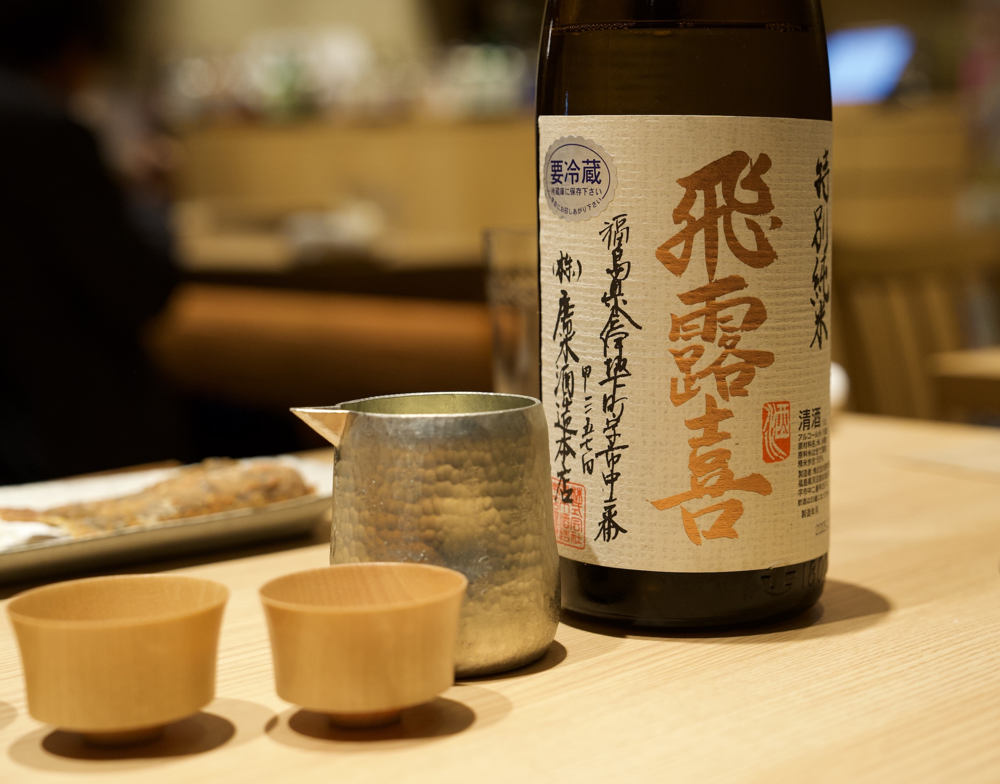

The labels describe one thing: how much of the rice grain was polished away before brewing. Everything else follows from that.
Every sake label tells you how much of the rice grain survived the polishing stage. That number — seimaibuai — is what divides junmai from ginjo from daiginjo. A rice grain polished to 70% still has most of its outer layer; polished to 50%, it's closer to a pearl. The outer layer carries fats and proteins that make sake taste heavier and more savoury. The inner starch makes it lighter and more aromatic.
Less polishing means a rounder, grainier, more food-friendly sake. More polishing means a cleaner, more delicate one that rewards sipping on its own. Neither is better. They're built for different moments.
Daiginjo gets called "premium" a lot. It isn't. It's specific — for a specific kind of drinking.
One last thing worth knowing: "junmai" on its own means no distilled alcohol was added. Pair it with ginjo or daiginjo — junmai ginjo, junmai daiginjo — and you get both pieces of information at once. Rice-only, and polished to at least this much.